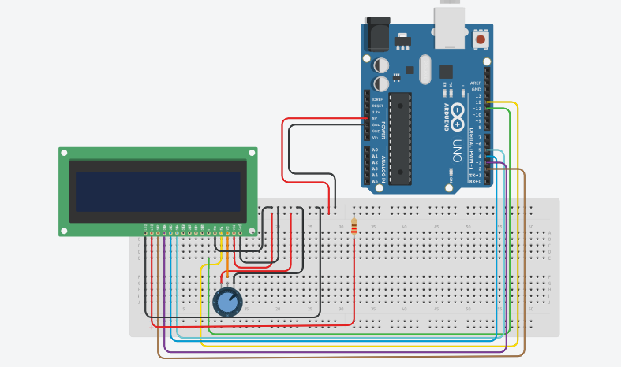

LCD display Project
Components Required
- Arduino Uno
- 16x2 LCD Display
- 10kΩ Potentiometer
- 220Ω Resistor
- Breadboard
- Jumper Wires
- USB Cable
Description
The LCD (Liquid Crystal Display) project allows you to display text and numbers on a screen using Arduino. This is a fundamental skill for creating user interfaces and showing sensor data in real-time on any Arduino project.
Watch Video
Watch on YouTubeArduino Code
/*
Project: LCD Display Project using Arduino
description: Learn how to interface a 16x2 LCD display with an Arduino Uno.
Components:
- Arduino Uno
- 16x2 LCD Display
- 10kΩ Potentiometer
- 220Ω Resistor
- Breadboard and Jumper Wires
- USB Cable
Author: Circuit Creation RN
*/
// This code will display "Hello World" on the LCD screen when the Arduino is powered on.
// Include the LiquidCrystal library
#include
// Initialize the library with LCD pin numbers
LiquidCrystal lcd(12, 11, 5, 4, 3, 2);
void setup() {
// Set up the LCD's number of columns and rows
lcd.begin(16, 2);
// Print "Hello World" on the first row
lcd.print("Hello World");
}
void loop() {
// Nothing to do, just display the message
}
Circuit Diagram

Download Diagram
{kind=link}